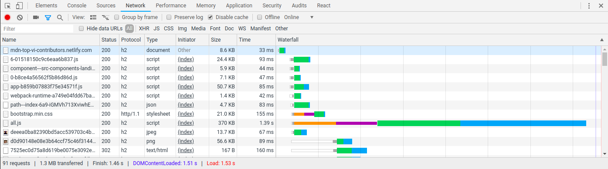
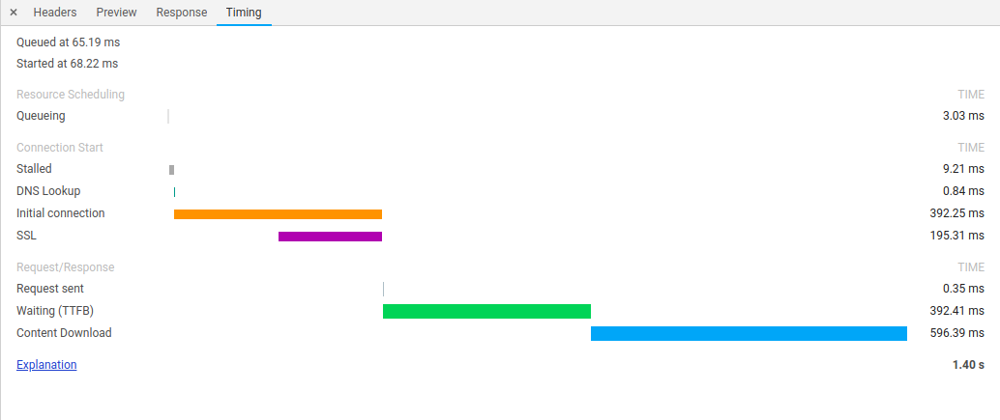
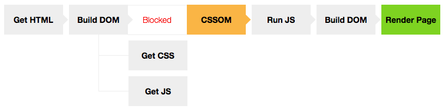
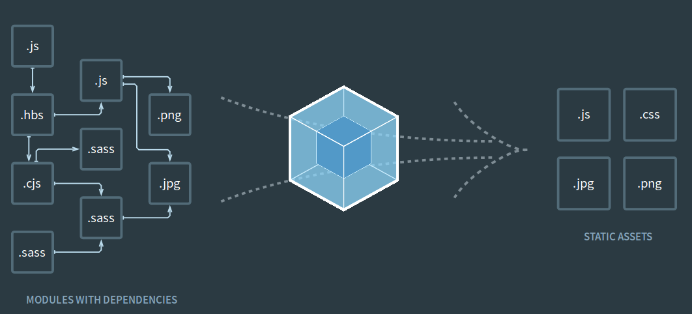

About me:
Trần Trọng Thanh
Front End Specialist
CTO & Co-founder naustud.io
Front End Architect goalify.plus
Contact me:
Website: int3ractive.com
Github, Twitter, Facebook: @trongthanh
Today's discussion:
How to make your web apps load fast
“Amazon's calculated page load slowdown of just 01 second could cost it $1.6 billion in sales each year”
Common Advices
- Concatenate JS & CSS
- Minify static files
- Optimize image sizes
- Move <script> tag to bottom
- Turn on gzip
- ...
Let's try to answer:
Why?
What happen
from entering URL on address bar to full rendered page
HTTP Request
Anatomy
devtool network timing
DNS Lookup
Initial Connection
Time to First Byte (TTFB)
Advices for Initial Connection & TTFB
- Reduce geographical latency with server location, CDN (devops)
- Cache server requests (nginx, REDIS...) (backend + devops)
- Reduce number of requests: concatenate, sprite sheet...
- OR use HTTP2 (multiplexing) (devops)
Content Download
Advices for Content Download
- Reduce static files size: minification
- Optimize images, even better, resize images for difference screen size
- Use gzip (backend + devops)
- Use browser cache (backend + devops)
- (2018) Use service-worker with cache API
Critical Rendering Path
<!doctype html>
<html>
<head>
<meta charset="utf-8">
<title>Page title</title>
<link rel="stylesheet" href="/css/global.min.css">
<link rel="stylesheet" href="/css/page.min.css">
<script src="/js/vendor.min.js"></script>
<script src="/js/main.min.js"></script>
</head>
<body>
<!-- HTML markups here -->
</body>
</html>
Advices for Critical Rendering Path
- Inline critical (above the fold) CSS
- Simplify HTML tags, avoid unnecessary nesting
- Minify HTML to under 14kb (TCP packet limit)
- Delay loading of non-critical assets: JS, below the fold CSS, web fonts...
Having done all of above will guarantee fast page render under 2 seconds.
Is it?
How about SPA?
Typical SPA's downloaded HTML
<!doctype html>
<html lang="en">
<head>
<meta charset="utf-8">
<title>Single Page Application</title>
<link rel="stylesheet" href="/app.min.css">
<link rel="stylesheet" href="https://fonts.googleapis.com/...">
</head>
<body>
<div id="app"></div>
<script src="/bundle.min.js"></script>
</body>
</html>
Common performance problems with SPA:
- Empty initial HTML
- Large JS bundle size
- Long JS parsing time
- Critical rendering path doesn't apply for SPA
User-centric performance metrics

First Paint -> First Contentful Paint -> First Meaningful Paint -> Time to Interactive
FP -> FCP -> FMP -> TTI
SPA page speed optimization target:
Reduce time to FMP
=
Reduce JS bundle size
SPA Optimization Rules of Thumb
- Minify and bundle JS on production
- Shared bundles (leverage browser cache)
- Code splitting (reduce load size for a "logical page")
- Tree shaking
- preload and prefetch
What is common among Angular, React, Vue?


Webpack
Minify JS on production
Use Webpack's UglifyJSPlugin
if (PRODUCTION) {
config.plugins = config.plugins.concat([
new webpack.optimize.UglifyJsPlugin({
beautify: false,
mangle: {
screw_ie8: true,
keep_fnames: true,
},
compress: {
screw_ie8: true,
drop_debugger: true,
drop_console: true,
},
output: {
comments: false,
},
sourceMap: !PRODUCTION,
}),
]);
}
Shared Bundle:
Extract Style rules to CSS file
rules: {
test: /\.s?css$/,
use: ExtractTextPlugin.extract({
fallback: 'style-loader',
use: [{
loader: 'css-loader',
options: {/*...*/},
}, {
loader: 'postcss-loader',
options: {/*...*/},
}, {
loader: 'sass-loader',
options: {/*...*/},
},
],
}),
},
plugins: [
new ExtractTextPlugin('styles/styles-[chunkhash].css'),
]
Shared Bundle:
Extract common modules with DLLPlugin
const config = {
entry: {
vendor: [
'classnames',
'dom-helpers',
'moment',
'react',
'react-dom',
'react-prop-types',
'react-router',
'jquery',
/*...*/
],
},
output: {
filename: 'vendor.js',
path: path.join(__dirname, buildPath),
library: '[name]',
},
plugins: [
new webpack.DllPlugin({
name: '[name]',
path: `${buildPath}vendor-manifest.json`,
}),
],
}
Code Splitting:
Split chunks based on route
Lazy load module with dynamic imports
<Route path="achievement" getComponent={(nextState, cb) => {
showModuleLoading();
import(/* webpackChunkName: "views/admin/achievement" */ './views/admin/AdminCoreValuePage' )
.then(PageComp => {
showModuleLoading.cancel();
AppActions.toggleLoading(false);
return cb(null, PageComp.default);
});
}}
/>
Lazy loaded route component with dynamic import
Tree Shaking
Webpack Bundle Analyzer
$ npm install --global webpack-bundle-analyzer
$ webpack --profile --json > stats.json
$ webpack-bundle-analyzer stats.json
Common tree shaking-ready techniques
- Prefer multiple exports than single object export
// utils.js
// instead of this:
export default const utils = {
trim() {/*...*/},
format() {/*...*/},
}
// do this:
export function trim() {/*...*/};
export function format() {/*...*/};
Common tree shaking-ready techniques
- Import only what needed, especially from multi-part libraries
// Ends up pulling in everything.
import { truncate } from 'lodash';
// Just pull in the module we're interested in.
import truncate from 'lodash-es/truncate';
Common tree shaking-ready techniques
- Use Webpack IgnorePlugin (for example Moment)
plugins: [ new webpack.IgnorePlugin(/^\.\/locale$/, /moment$/), ] - Or use tree-shakeable alternative:
date-fnsimport {format, parse} from 'date-fns/esm';
preload and prefetch
<link rel="preload" href="/page/index.js" as="script"/>
<link rel="preload" href="/page/_error.js" as="script"/>
<link rel="preload" href="/app.js" as="script"/>
Preload common chunks and next page JS bundle for faster transition to next page
Wow, that's a lot!
But, there's more!
Can we make critical rendering path works for SPA?
Yes!
With Universal JS Applications
What is Universal JS Applications
- Used to be called Isomorphic JS Applications
- There are portions of JS run on both client and server (hence universal / isomorphic)
- Server-side rendered HTML
- Server-enabled History Push State
Client only Redux architecture
Universal Redux architecture
That's all folks!
How do we audit our optimization effort?
Audit with LightHouse
Benchmark on production with webpagetest.org
What we discussed was only part of
Front End Optimization
The whole picture: The RAIL model

To be continued...